一般歯科・小児歯科
一般歯科とは

一般歯科とは、虫歯や歯周病の治療、および差し歯や入れ歯などの補綴（ほてつ）などを主とする歯科医療のことをいいます。
小さいお子様からご年配の方まで幅広く対応しています。
上記にあるような総合的な治療は、どこの歯科医院でもほぼメインとして行っていますが、
小児歯科、矯正歯科、口腔外科などの専門分野が新しく生まれたため、
これらと区別する意味で「一般歯科」という名称が用いられるようになりました。
普通の歯科医院が行っている治療と考えて問題ありません。
虫歯について
虫歯とは、口内の細菌が炭水化物（糖質）を栄養源として酸を産生し、酸によって歯が溶けていくという、 歯としての機能が正常ではなくなる病気のことです。 食生活などのさまざまな環境によって、その発症および進行が左右される生活習慣病としての側面も持ち合わせています。
虫歯の進行と治療のポイント
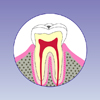
C1
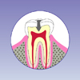
C2
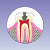
C3 歯髄炎
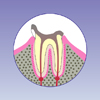
C3 歯周組織炎
- C0 まだエナメル質には穴があいていませんが、歯が溶ける「脱灰」が進んでいます。 この時期の治療のポイントは、まず虫歯になりやすい生活環境をあらためること。 また、丁寧なブラッシングで細菌を減らし、歯科医院でのケア（フッ素塗布）や セルフケア（フッ素入り歯磨き剤の使用）等で再石灰化を促進させることです。
- C1 エナメル質が溶けて穴があき始めていますが、まだ痛みなどの症状はありません。 ごく小さな穴の場合は、Coと同様の治療を行い、少し大きくなってしまった場合は、 侵されたエナメル質をごく少量削り取り、シーラントやセメントで埋めてしまいます。 通常治療は一日で終わり、痛みもほとんどありません。
- C2 象牙質にまで浸食が進んでいますが、歯髄までは進行していません。
象牙質はエナメル質よりも溶けやすく、虫歯は早く進行するため、エナメル質の穴は小さくても、
歯の内側で大きく広がっていることがあります。
こうなると冷たいものがしみるとか軽度の痛み等の症状が発現してきます。
治療は、侵されたエナメル質、象牙質を最小限取り除き、歯と同じ色の材料（レジン）を詰める方法で治りますが、 虫歯が広範囲で直接詰める治療で難しい場合は、削った歯の型を取り、後日出来上がった詰め物を詰める方法があります。 - C3 歯髄まで炎症が進んで、冷たいものや熱いものがしみて痛みが走ることがあります（歯髄炎）。
また徐々に悪くなり、気づかぬうちに既に歯髄が死んでいて、痛みを感じなくなっている場合もありますが、 この場合も感染を起こすと、根の先に膿が溜まり歯肉が腫れ、激しい痛みを伴うこともあります（根尖性歯周組織炎）。 炎症がひどくなると、骨髄炎や心内膜炎を起こすこともありますので、注意が必要です。
こうなった場合の治療は、歯髄と汚染された象牙質をきれいに取り去り、根の中を消毒した後、 根の先までぴったりと材料を詰めて、その上に詰め物や被せ物をします。 治療がうまくいくと、生体の治癒力で炎症が治まり、根の先の膿もなくなり、 又炎症により溶けた骨も再生して、長期間使うことができます。 ただ、根管の治療は複雑で治療には時間がかかりますし、通院回数も5・6回あるいはそれ以上かかることもあります。 根管の形態は複雑で、先の方が網状に広がっているもの、途中で枝分かれしているもの、 S字状に曲がっているものなど治療の困難な根管が多いので、極めて繊細で高度なテクニックが必要な治療なのです。 しかし、残念ながら治療ができない場合もあり、その場合は抜歯することになります。
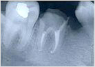
網状
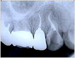
S字状
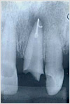
枝分かれ
おわかりでしょうか。大切なことは手遅れにならないよう虫歯を予防すること。 そして虫歯の早期発見、早期治療です。また治療後は定期的に歯科検診を受け、ご自分の歯を守っていってください。 歯科医院で予防歯科を受けましょう。
歯周病について
歯周病とは、歯肉に細菌が感染し発症する、慢性の炎症性疾患で感染症の一つです。
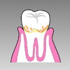
歯肉炎
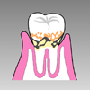
軽度歯周炎
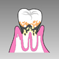
中等度歯周炎
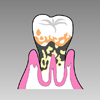
重度歯周炎
- 歯肉炎 炎症が歯肉だけに起こっているため歯肉炎と呼ばれます。 このとき歯肉は炎症のため赤く腫れますが、歯槽骨の溶解はまだありませんので、炎症を治せば歯肉は元通りに回復します。 ていねいなセルフケア（家庭でのプラークコントロール）と 歯科医院でのプロフェッショナルケア（ポケット内のプラークと歯石の除去）で、歯肉炎を撃退しましょう。
- 軽度歯周炎 炎症が歯根の半分程度の深さまで進んで歯周組織へと波及し、歯槽骨も失われはじめています。
歯周ポケットは4ミリ程度。 歯肉炎と同じようにポケット内に隠れたプラークと歯石を取り除き、セルフケアを毎日しっかり行って治療をしましょう。 - 中等度歯周炎 炎症が歯根の3分の2程度の深さまで進み、歯周ポケットの深さは6ミリ程度に。 歯がぐらぐらし始め、歯の隙間が広がり、食事にも支障をきたすようになります。 また、膿が出たり時々腫れることもあります。 力を受け止めるクッションの役割をしている歯根膜が失われると、噛む力の影響を受けて一気に破壊が進むこともあります。 こうなると、専門的な歯周治療が必要です。 まず、ブラッシングやプロフェッショナルケア、手術などにより、徹底的にプラークや歯石を除去することにより 炎症のコントロールを行います。 同時にぐらぐらする歯を固定したり、咬み合わせの調整をするなど力のコントロールを行い歯槽骨の回復を待ちます。 最近では最新の治療技術を用いて歯槽骨を再生することも行われていますが、よい条件下でないと歯槽骨の回復は実現しません。 いずれにしろ大変複雑で長期にわたる困難な治療となりますので、よりいっそうの協力が患者さんに求められます。
- 重度歯周炎 歯周組織が3分の2以上失われ、歯はぐらぐら、歯ぐきが腫れて痛んだり、膿が出たり、歯が抜け落ちてしまうことすらあります。
もうすでに治療が困難な状態になっており、歯を残せない場合もあります。
徹底したセルフケアはもちろん、歯科医院で行う治療にも、患者さんの長期にわたる努力と忍耐が必要になります。
歯周病は細菌が原因として起こる病気ですが、その発症や進行には患者さんの生活習慣（喫煙、食生活やストレス等）がおおいに影響します。 プラークコントロールと並行して、生活習慣を見直し規則正しい生活を行うことも、歯周病の治療には必要な条件です。
歯周病はセルフケアとプロフェッショナルケアで治ります。 患者さんと歯科医師・歯科衛生が連携して一緒に歯周病を撃退しましょう。
小児歯科とは
小児歯科は、乳幼児期から学童期（12～13歳）を対象にしている歯科医療です。 治療内容としては、虫歯の治療や虫歯の予防処置（シーラント、フッ素塗布など）などが代表的です。 また、将来の歯並びや噛み合わせが正しくなるように、 幼少期の頃から乳歯と顎の正常な成長・発育を促していく歯列矯正などがあります。 当医院では、健康で美しい歯を育てていくための指導や治療を行っていきます。
お子様の歯と口内の健康管理は、予防と早期発見が大事です。 大人とは違い生え替わる乳歯を多く持つ、お子様の口内環境を総合的に管理し治療していくこと、それが小児歯科なのです。
お子様への配慮
小児歯科では、お子様が泣き出したりだだをこねていたりする光景が見られることがあります。 そんなとき、お子様の医療に慣れた医師やスタッフがうまく対応してくれる歯科医院は信頼できるといえるでしょう。 また、絵本やおもちゃが揃ったキッズルームがあるなど、お子様が楽しめる工夫がされている歯科医院もあります。
お子様のことを考えて信頼できるかかりつけの歯科医院を持ち、虫歯や歯周病などを防ぐために定期的に検診を受けましょう。 高知県高知市にある六泉寺歯科では、予防歯科や定期検診なども承っております。
症例紹介
CASE1（ブリッジ・義歯）
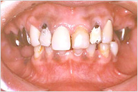
術前
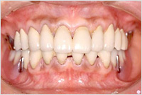
術後
CASE2（咬合挙上・単冠）
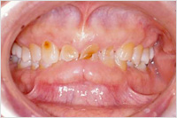
術前
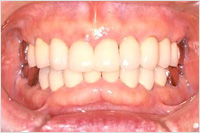
術後
CASE3（根管治療1）
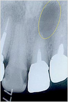
術前
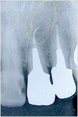
術後
CASE4（根管治療2）
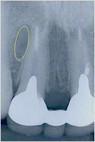
術前
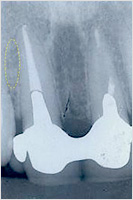
術後
CASE5（歯牙移植）
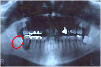
術前
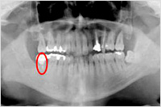
術後